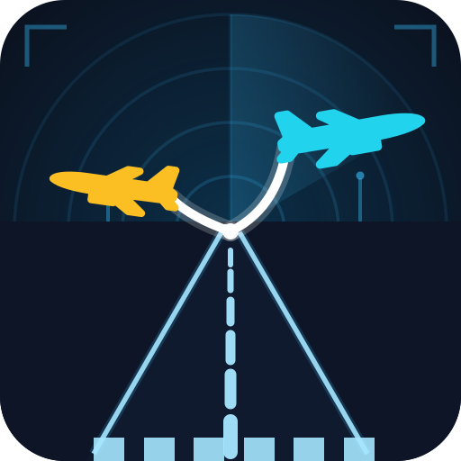
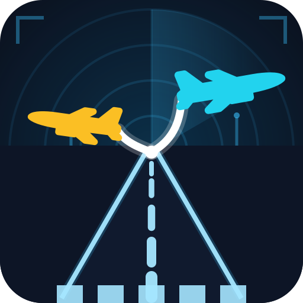
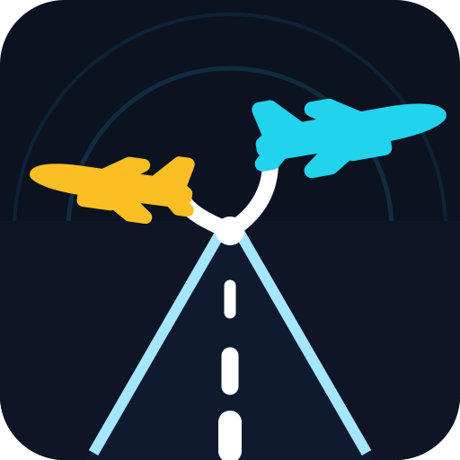
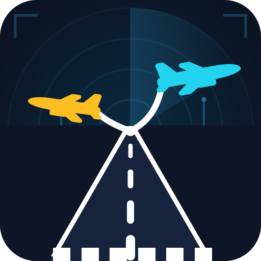

同一构图与配色,五种加粗策略。每张附 48px / 24px 缩放与深色任务栏模拟 —— 建议重点看 48px 和 24px 下跑道与分叉线是否清晰。选定后我会用它重新生成 ICO 并重编译。
当前已内嵌版本的同等粗度,作为对照锚点:边线 5.5、航迹 10、6 节中线。

边线 8、航迹 13、中线 5 节加粗、斑马线 5 根加宽,飞机放大 10%。

去掉斑马线/HUD/细环,只留粗边线 + 3 节中线 + 超粗分叉,飞机最大。小尺寸最强。

B2 粗度上全线加青色辉光(边线/中线/航迹双层描边),雷达环更亮,科技感最强。
跑道边线与中线全部改纯白、跑道面提亮,白色占比最高,深浅背景下对比最稳。
